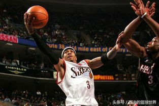
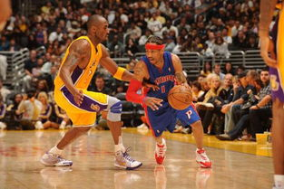
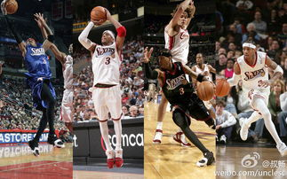

| 场外生活 | |
| 慈善活动 | |
| 2002年10月21日，艾弗森走进社区，参加76人的慈善活动。 | |
| 2012年12月6日，艾弗森与拉夫·阿尔斯通参加福州一场慈善活动。此次两位球星在慈善赛中将价值一万元的体育用品捐赠给福建一些山区小学，用于改善孩子们的体育课设施。 | |
| 婚姻生活 | |
| 1991年，16岁的塔瓦娜是汉普顿高中的校花，她在遇到艾弗森之后就爱上了这个酷酷的男孩。4年之后，当时还在乔治城大学读书的艾弗森便与塔瓦娜生下了他们的第一个女儿——蒂奥拉。 | |
| 1996年，艾弗森以状元的身份进军NBA，加盟了费城76人队。就在那之后的第二年，塔瓦娜又为“答案“生下了一个儿子，并且取名阿伦二世。 | |
| 2001年8月4日，已经育有一儿一女的艾弗森和塔瓦娜在一个名为沃利斯的小镇举行了一场特别的“秘密婚礼“。 | |
| 2002年7月22日，艾弗森被费城警方逮捕。一名男子举报艾弗森将裸体的妻子从家里扔了出来。之后，艾弗森和他的一个叔叔持枪闯到表弟家去找塔瓦娜，并向其逼问塔瓦娜和表弟的下落。经过警方调查，艾佛森因为涉嫌持枪闯入他人住宅，随后遭警方软禁。 | |
| 2012年，艾弗森控告妻子盗窃他的财物，希望警方把妻子关进监狱。塔瓦娜甚至还申请过限制令，要求动用法律的武器约束艾弗森的行为，理由是艾弗森曾经对她进行骚扰和恐吓。 | |
| 2013年1月20日，艾弗森和妻子塔瓦娜正式分手，并签署了一份财产协议，由艾佛森赔偿了塔瓦娜300万美元的分手费。 | |
| 2014年03月06日，阿伦-艾弗森已经与前妻塔瓦娜达成了和解，塔瓦娜接下来也将一起承担起抚养五个孩子的责任。 |


